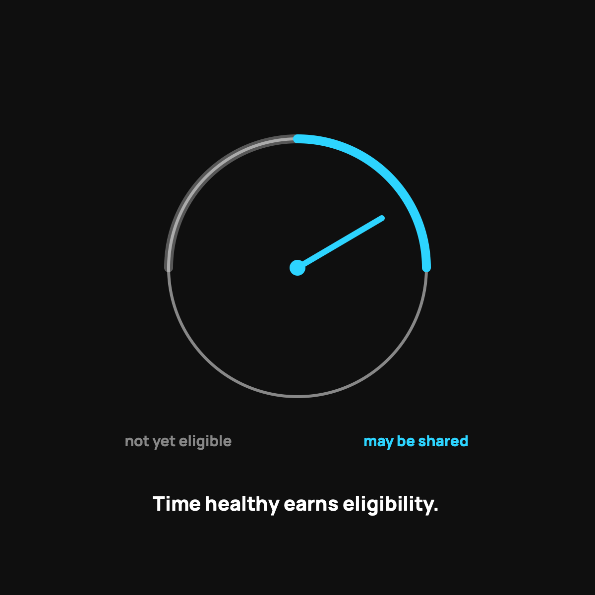

Pre-Existing Conditions and Health Sharing: The Real Rules
Health sharing's biggest limit, explained straight: waiting periods and when it's the wrong tool.
Pre-existing conditions are health sharing's most important limit. A condition you already have, or had recently, isn't shared right away. There's a waiting period, and if you go a stretch without symptoms, treatment, or medication, it can gradually become eligible over the first few years. A serious active condition needing expensive care now is usually the wrong fit.

This is the topic where you most need a straight shooter, because it's where health sharing has its biggest, most important limit. If you or someone in your family has a pre-existing condition, you have to understand these rules before you join, not after. So no spin here, just how it actually works with CrowdHealth, the service I use, and how to think about whether it's right for you.
First, what counts as pre-existing
A pre-existing condition is any health issue you already have when you sign up, or one you had recently. Think diabetes, high blood pressure, a past cancer, a bad back you've been treated for. The reason it matters is simple. Health sharing is a community pooling money for unexpected events. Something you already have isn't unexpected, so the model treats it differently.
That's not a moral judgment about you. It's just the math of how a sharing pool stays fair for everyone in it.
The waiting-period rule
Here's the core mechanic. Many conditions aren't eligible for sharing right away. Instead there's a waiting period, and if you go a stretch of time without symptoms, treatment, or medication for that condition, it can gradually become eligible over the first few years of membership.
In plain terms: the longer you're a healthy member without needing care for that condition, the more it may be shared later. A well-managed issue from years ago is treated very differently from something you're actively being treated for today.
Read the actual guidelines, not a summary
I can give you the shape of it, but your specific condition deserves the specific rule. The guidelines spell out exactly how each type of situation is handled and how long the waiting periods run. Read them before you join. This is the single most important homework assignment in the whole decision, and skipping it is how people get an unwelcome surprise later. That's also why I keep pointing people to my honest who-should-skip-this post.
When health sharing is the wrong tool
Let me be blunt, because you deserve it. If you have a serious, active condition that needs ongoing, expensive care right now, health sharing is probably not your best fit for that condition today. You'd likely be better served by a plan with a legal guarantee. There's no shame in that. Using the right tool for your situation is the smart move, and sometimes health sharing isn't it.
When it can still work
On the other hand, if your "pre-existing condition" is something minor, well-controlled, or years behind you, it may matter far less than you fear, especially after the waiting period. Plenty of people with a manageable history use health sharing happily for everything else life throws at them. The only way to know your case is to read the rule for your specific condition.
The takeaway
Pre-existing conditions are health sharing's most important limit, and the rules are real: waiting periods, and some active conditions that simply aren't a fit. But the rules are written down plainly, not hidden. Read the guidelines for your exact situation, be honest with yourself about how active your condition is, and you'll know clearly whether this is your tool or not.
Questions I get about this
What counts as a pre-existing condition for health sharing?
Any health issue you already have when you sign up, or had recently: diabetes, high blood pressure, a past cancer, a bad back you've been treated for. Sharing pools money for unexpected events, and something you already have isn't unexpected, so the model treats it differently.
How long is the waiting period for pre-existing conditions?
With CrowdHealth, a condition documented, diagnosed, or symptomatic in recent years isn't eligible for the first two years of membership, and after that it can be shared with a yearly cap. The exact rule depends on your condition, so read the guidelines for your specific situation before you join.
Can I use health sharing if I have a minor, well-controlled condition?
Often yes. Something minor, well-controlled, or years behind you may matter far less than you fear, especially after the waiting period, and plenty of people with a manageable history use sharing happily for everything else. The only way to know your case is to read the rule for your specific condition.
Want to read the actual guidelines for your situation? Use my code NORMAL: see CrowdHealth (opens in a new tab). New members get their first 3 months at $99 a month with code NORMAL.
My family of four uses CrowdHealth and I really believe in the model. If you join through my discount link (opens in a new tab) (code NORMAL), you get your first 3 months at $99 a month, and Normaltown USA earns a referral bonus if you stick around. It costs you nothing extra, and I only refer you to things I would tell a friend about. Health sharing is not insurance, and nothing here is medical, tax, or financial advice.

Written by David Dewese
Normal guy with a full-time job, wife, and kids. Spent twenty years pursuing music and creative ventures before starting a family. Sharing tips and tricks on how to thrive while living on an artist's income. Not a financial advisor. More about me.
New here?
Normaltown USA is plain-English money and healthcare help for normal people, written by a regular guy with a family of four. No jargon, no hype. Start here, or read the FAQ.